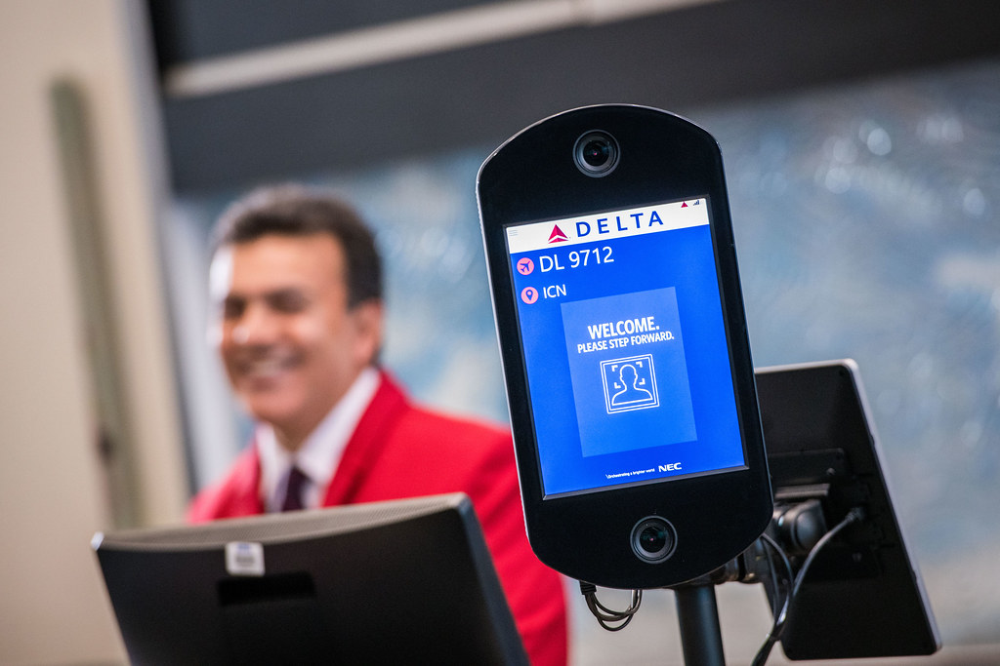

Most Canadian fintechs that call us have already tried the cheap route once. A marketplace contractor, a fixed bid, a working demo, and then an onboarding flow that fails review because nobody thought about audit logs, consent capture, or what happens when a payment callback arrives twice. The label Canadian Open Banking API developer India covers everyone from a single freelancer to a delivery centre of forty, so it tells you nothing about who will ship.
We build these integrations for Canadian lenders, credit unions and payment startups out of Tiruchirappalli in Tamil Nadu, with headquarters in Singapore. This guide covers what Canadian teams hand over, how OSFI and FINTRAC shape the work, and what open banking looks like in the country right now.
That is equally true of a KYC solution for Canadian fintech onboarding: FINTRAC expectations, consent capture and audit logs are built in from the first sprint rather than retrofitted before launch.
Key Takeaways
- OSFI regulates federally regulated institutions, so any system touching one needs logging, access control and change history from the first sprint.
- FINTRAC reporting sits under the Proceeds of Crime (Money Laundering) and Terrorist Financing Act, and the report fields are not negotiable.
- Canada's open banking framework is still settling. Build to the API contract you hold, not to a headline date.
- Interac e-Transfer and Interac Online carry domestic flow, and each institution behaves slightly differently.
In This Guide
What Canadian Teams Actually Hand Over
The work that travels well has clear edges: a documented API, an authentication flow, a set of webhooks, and test cases that pass or fail. Canadian clients bring us three categories again and again.
Onboarding, KYC and account opening
Digital banks and wealth apps lose applicants at the identity step, which is why KYC API integration is the request we hear most often from Canada. Wiring a document and liveness vendor, capturing consent a reviewer will accept, and storing the states that matter is most of the job. See how we scope those flows on our API integration page.
Lending, LOS and credit union systems
Provincially regulated credit unions answer to bodies like FSRA in Ontario rather than OSFI, so their scope is often narrower and quicker to approve. What they want is unglamorous: a member onboarding flow that talks to the core, or a loan origination system that stops requiring five re-keyed forms.
Payments and reconciliation
Payment work in Canada means Interac flows, card processors and a ledger that has to agree at the end of the day. Developers who have never run production traffic estimate it at half of what it takes.

OSFI and FINTRAC: Two Different Jobs
Buyers blur these two constantly, and it costs time later.
OSFI, the Office of the Superintendent of Financial Institutions, regulates federally regulated financial institutions: the Big Five (RBC, TD, Scotiabank, BMO, CIBC), federal credit unions, insurers and pension administrators. If your product plugs into a federally regulated bank, that bank's third-party risk team will ask about logging, access control, incident process and change history before a single API call goes live. An OSFI compliance software offshore India engagement only works when the team treats those artefacts as part of the deliverable.
FINTRAC is a different animal. It collects anti-money-laundering reports under the Proceeds of Crime (Money Laundering) and Terrorist Financing Act: suspicious transaction reports, large cash reports, electronic funds transfer reports. A FINTRAC AML software developer India needs to understand record retention, threshold reporting, and the tedious mapping of your transaction model onto required report fields. Get that mapping wrong and the report still transmits, which is worse than a crash.
Here is the unglamorous part. Bank vendor review takes longer than the pitch deck suggests. A Canadian institution's third-party assessment can run a full quarter before integration touches production. Plan the pilot in your own environment and run the bank's onboarding as a parallel track.
What Open Banking in Canada Looks Like Right Now
Canada took a different route than the UK and the EU. Instead of one directive, the regime arrived piece by piece: Canada's open banking framework is rolling out under the Retail Payment Activities Act with FCAC oversight on the consumer-driven side, and the regulatory picture is still settling. Standards have been published, participation has been phased, and dates have moved more than once since the first announcements.
That uncertainty has a practical answer. Build to the API contract you actually hold in hand, and treat consent, scopes, access logs and revocation as first-class concepts in your domain model. Those four survive any accreditation shape the framework ends in. A Canada fintech API developer offshore team that hardcodes today's participant list will be rewriting in a year.

Interac and the Domestic Payment Rails
Card rails get the press, but Interac moves the domestic money. Interac e-Transfer handles person-to-person and business collection: request-to-pay, autodeposit, notification callbacks, and status behaviour that differs between institutions. Interac Online covers card-not-present merchant authentication. An Interac API integration developer India team earns its fee on the edge cases: callbacks that never resolve, duplicate notifications, name mismatches between sender record and user profile, and the reconciliation job that has to catch all of it overnight.
A Canadian bank API developer India engagement will also touch core banking vendors, card processors and treasury systems, none of which publish tidy sandboxes. Budget time for credentials, test data and the paperwork that gates them.
Why India, and Why a Team in Trichy
Toronto and Vancouver firms have contracted Indian IT teams for two decades. The pattern is long-standing enough that nobody has to justify it to a board, and the Indian diaspora in Canada means context rarely gets lost in translation.
Time is the practical reason. Indian standard time runs ten and a half hours ahead of Eastern time in winter, so our late afternoon lines up with your morning. We write the overlap window into the engagement note rather than assuming it.
Retention is the quieter reason. A university city like Trichy has a sane cost of living and employers people stay with, which is not always true in Bangalore. Low churn means the engineer who learned your callback quirks in month one is still there in month nine. If you need individuals rather than a pod, our IT staffing practice places engineers with BFSI background too.
Engagement, Hours and How the Pilot Runs
The stack stays the same on every engagement: Spring Boot on the backend, React on the front, AWS underneath.
- Week 1 — Discovery. Our engineer and yours walk the existing system. You get a written scope with assumptions listed.
- Weeks 2–4 — Paid pilot. One integration, delivered to your repository, on your infrastructure.
- Month 2 onward — Dedicated team. Same engineers, wider scope, weekly demo instead of status emails.
On compliance we can say this: every engagement starts with an NDA, our processes follow ISO 27001 practices, and engineers work inside your access controls with no production personal data in development. We will not claim certifications we do not hold, or suggest that hiring offshore removes your regulatory obligations. It does not. A good vendor simply does not damage your compliance posture. If the scope is clear in your head, send us a short outline and an engineer replies the same working day.
FAQs Canadian Clients Ask Us
Is Viantha the Indian company building Open Banking API for Canadian fintechs?
Yes. We build consent and account information flows, Interac integrations, FINTRAC reporting pipelines and KYC onboarding for Canadian clients. The team works from Trichy in Tamil Nadu with headquarters in Singapore, and we run a late shift so Toronto and Vancouver morning hours have live overlap.
How does OSFI change what an offshore team has to deliver?
It moves documentation from nice-to-have to deliverable. Once your product touches a federally regulated institution, logging, access control, change history and an incident process come under review, and we produce them alongside the code rather than under audit pressure.
Can you integrate Interac e-Transfer into an existing Spring Boot backend?
Yes. Request-to-pay, autodeposit, notification handling and reconciliation go into existing Spring Boot or Node services without a rewrite. The exception handling takes the time, because institutions do not behave identically.
Talk to an Engineer, Not a Sales Rep
Describe the integration you need and the system it has to fit into. we will tell you honestly what it takes and whether we are the right team for it.
Start a Conversation Explore Services